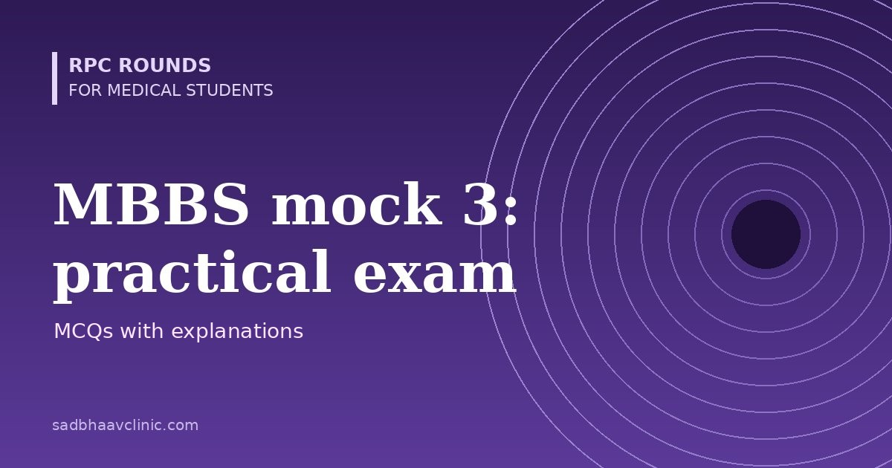

For: MBBS students
Last updated: November 2026
A 30-question mock that prepares you for the practical and viva: instruments, spotters, CBME clinical skills, case-sheet points and community ophthalmology.
Read the pages linked to the questions you got wrong and retake the test after a week. All student mocks: core concepts, clinical vignettes, practical exam, and the 50-question NEET-PG mock. Back to RPC Rounds for Medical Students.
More free mocks: all mock tests.
📘 Want more exam-ready material? See Most Commons in Ophthalmology on Kindle, or browse all my books.
How to cite this page
Patel D. MBBS Ophthalmology Mock Test 3: 30 MCQs on Instruments, Spotters, Skills and Community Ophthalmology. RPC Rounds (Sadbhaav Eye Clinic). Updated October 2026. Available at: https://www.sadbhaavclinic.com/mbbs-ophthalmology-mock-test-3.html. Accessed [date].
Looking for an eye specialist in Ahmedabad? Learn about our Eye Department or book a consultation with Dr. Dhaval Patel.